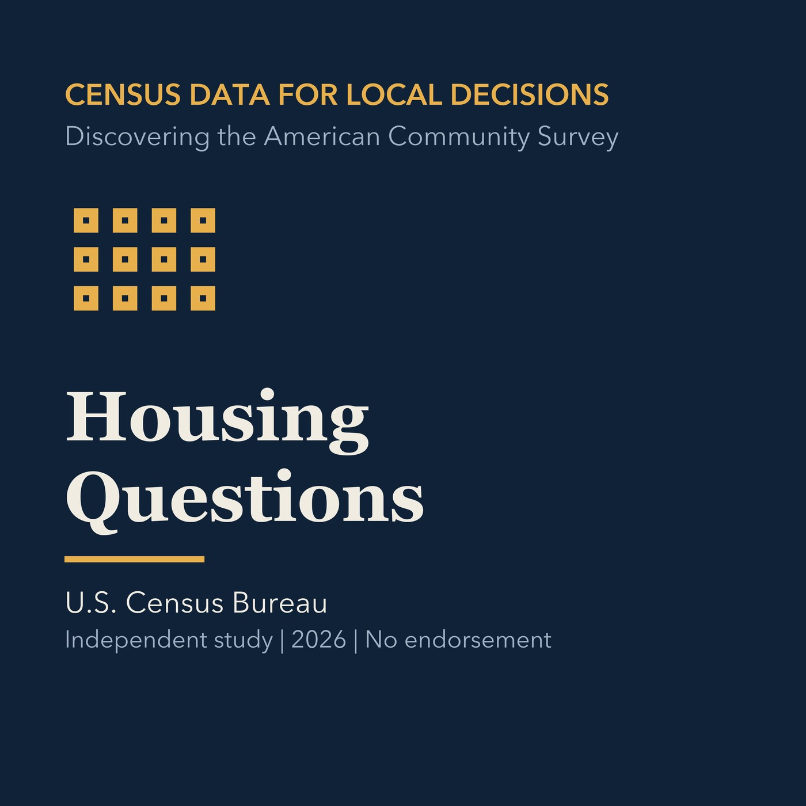

EPISODE 08
Housing Questions
Connects ACS housing measures to planning questions without overclaiming.

- Stable GUID
44cdef5d-d1ad-5462-95e5-5951268eeb2e- Release
- census-academy-v2026.2
- SHA-256
c340d10c98e9db46f658970ba6f009294674f6a7f32e4fdcfc1a364aae9d50fc